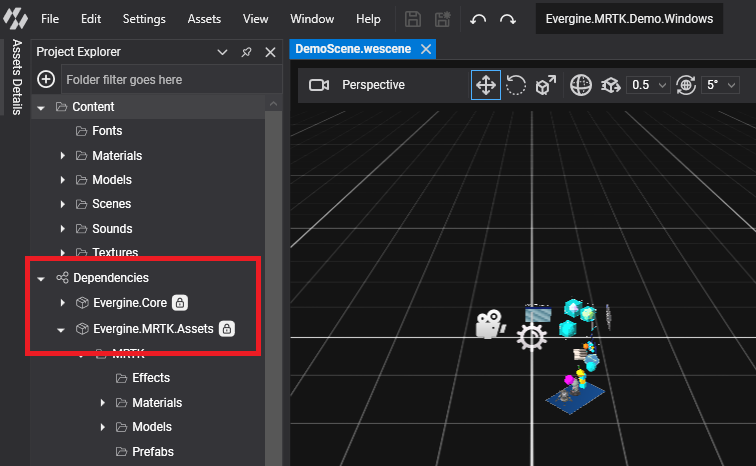
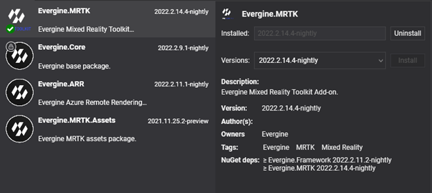
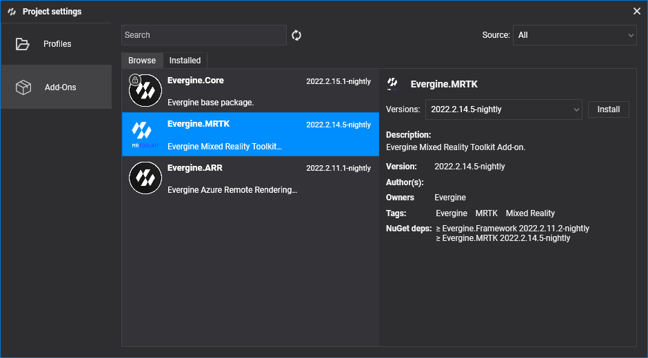
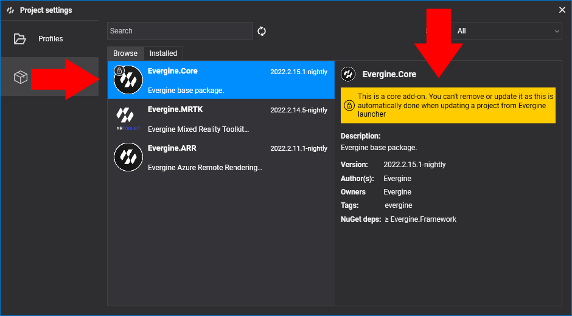
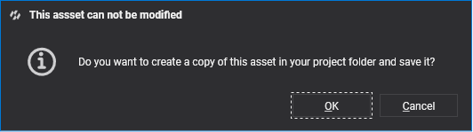
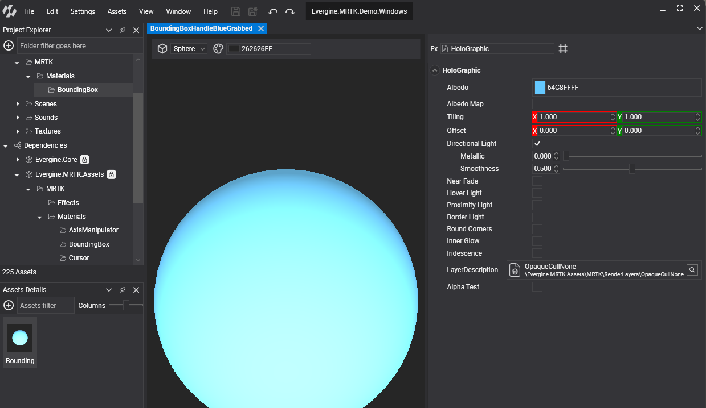

Add-ons
Add-ons are Evergine packages that bring a complete feature to your project: assets, prefabs, components, behaviors, effects, and the NuGet packages that implement them. You install them from Evergine Studio, and their assets appear in your project as read-only dependencies that you can use like your own.
The Evergine team publishes add-ons for extended reality, medical imaging, geospatial data, point clouds, and Gaussian Splatting. You can also consume add-ons from your own private or nightly sources.
Available add-ons
| Add-on | Package | What it is for | Platforms |
|---|---|---|---|
| MRTK | Evergine.MRTK |
Hand and controller pointers, pressable buttons, sliders, bounding boxes, and XR user controls. | Meta Quest, Pico, Windows (OpenXR, OpenVR, or mouse and keyboard emulation) |
| XRV | Evergine.Xrv.Core and one package per module |
An application framework built on MRTK: hand menu, floating windows, settings, help, themes, localization, and ready-made modules. | Meta Quest, Pico, Windows (for development) |
| Gaussian Splatting | Evergine.GaussianSplatting |
Load and render 3D Gaussian Splatting scenes (.ply, .splat, .spz, .ksplat, .sog, LCC). |
Windows, Android, iOS, Web (WebGL and WebGPU) |
| DICOM | Evergine.Dicom |
Load DICOM medical image series and render them as 2D slices or as a 3D volume. | Windows, Web |
| Point Cloud | Evergine.PointCloud |
Stream and render massive point clouds (E57, LAS, LAZ, PCD, EPC) with a progressive GPU render path. | Windows |
| Cesium | Evergine.Cesium |
Stream Cesium ion terrain, 3D buildings, and imagery, and place entities at geodetic coordinates. | Windows |
Add-ons in Evergine Studio
The Dependencies node of the Project Explorer lists the add-ons installed in your project. Each add-on shows its assets in its own folder, so you can drag its prefabs, materials, and other assets into your scenes.

Add-ons Manager
The Add-ons Manager installs, updates, and removes add-ons. It lives in the Add-Ons tab of Project Settings, and you can open it in three ways:
- From the File menu, select Manage dependencies.
- In the Project Explorer, right-click the Dependencies node and select Manage dependencies.
- Open Project Settings and select the Add-Ons tab.

The manager has two tabs: Browse lists every add-on available in the configured sources, and Installed lists the add-ons your project uses. Above the tabs you find:
- A search box that filters by name and tags.
- A Source selector that limits the results to one package source.
Each item in the list shows the add-on name, icon, and description, and:
- A badge under the icon: a green tick when you use the latest version, or a blue arrow when a newer version is available.
- The latest available version and, if the add-on is installed, the installed version. When both match, a single label is shown.
- Buttons to install the latest version or remove the add-on, which appear when you move the mouse over the item.

Select an item to open its detail view. From there you can install or uninstall the add-on, or pick a specific version to install.

The NuGet deps section lists the minimum versions of the engine packages and third-party NuGet packages that the add-on needs:
- Engine package versions must be aligned across your project. If an add-on requires a newer engine version than the one you use, Evergine Studio schedules a project restart to update it.
- Third-party NuGet packages with an explicit version are added or updated automatically when you install the add-on.
- NuGet packages listed without a version number are not added for you. Add them to your projects manually.
Core add-ons such as Evergine.Core show a lock icon. You cannot remove or update them from the manager; Evergine Launcher updates them when you update the project's Evergine version.

Private and nightly add-on sources
The public source contains the add-ons published by the Evergine team. Evergine can also read add-ons from your own sources: a local folder or an Azure Storage container. Use them to test nightly builds or to distribute internal add-ons that are not published.
Sources are declared in an Evergine.config file placed next to your project's .weproj file. You can write it by hand or add entries with the sources add <name> <uri> command of the Evergine project CLI.
{
"Sources": {
"evergine-nightly": "https://everginestudio.blob.core.windows.net/nightly",
"local-repo": "C:/EvergineFeeds/local"
}
}
- Name (the key): any unique name. The Add-ons Manager shows it in the Source selector.
- URI (the value): an absolute local folder path or an Azure Storage container URL. Append a SAS token to the URL if the container requires authentication.
Important
Local folders must be absolute paths. A relative path is interpreted as a storage URL and the source fails to load.
Customize add-on assets
Assets that come from an add-on are read-only. The Project Explorer marks them with a lock icon:
You can still edit one. When you save a modified add-on asset, Evergine Studio asks whether you want to create a copy of it in your project:

The copy is stored in your project folder and overrides the asset provided by the add-on. This lets you adapt Evergine core assets, or any add-on asset, to your application without changing the package.
